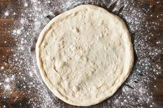

Pizza Dough
A delicious dough that you can use to make any pizza you want! From NY style, to margherita, the choice is yours!
Ingredients
- 600 grams bread flour
- 420 grams luke warm water
- 2 tbsp olive oil
- 1 tbsp sugar
- 1 tbsp salt
- 1 tsp active dry yeast
Steps
- Mix water, sugar, and oil in a large mixing bowl. let sit for five minutes to make sure yeast is alive.
- add in your flour, olive oil, and salt and mix till a coheisive ball forms.
- knead the dough with your hands till you can stretch it thin without it tearing. (You can keep your hands from sticking by wettign your fingertips wiht water)
That's it!You have your very own pizza dough!